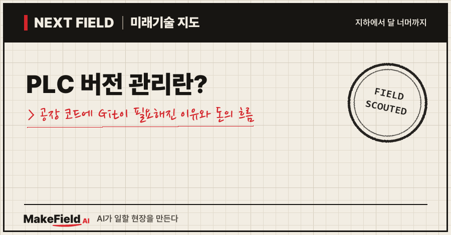
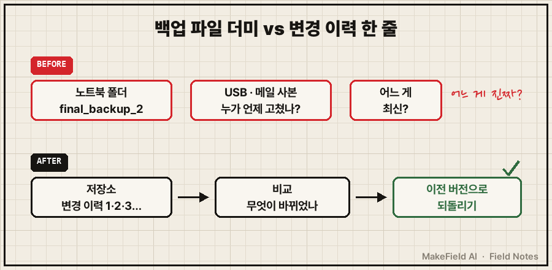
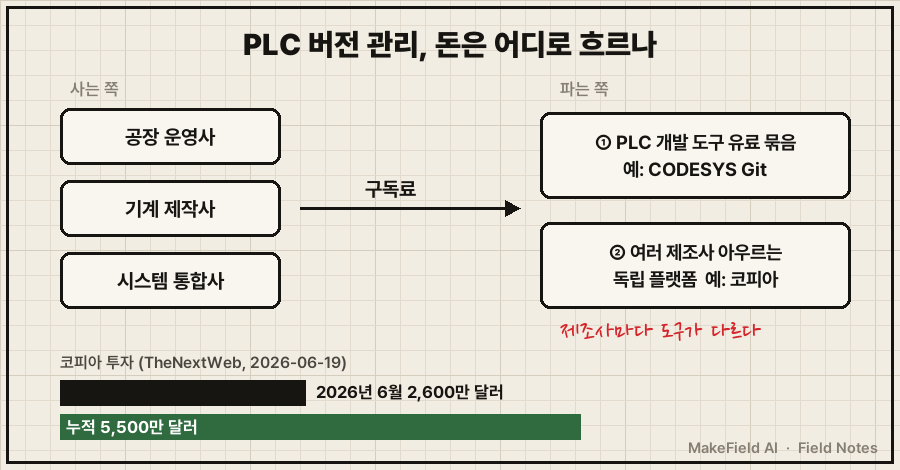
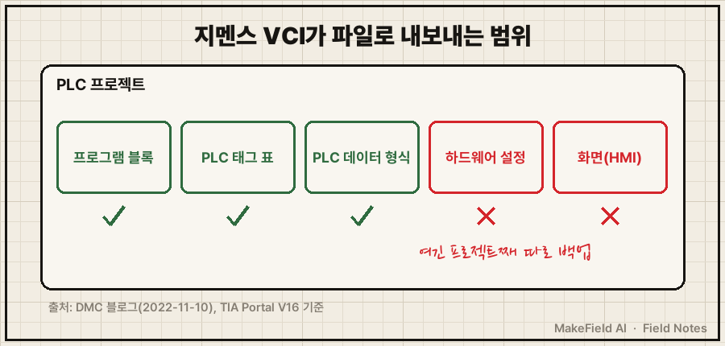

한 줄 요약: PLC 버전 관리는 공장 기계를 움직이는 PLC 프로그램이 언제, 누구에 의해, 어떻게 바뀌었는지 전부 기록하고, 문제가 생기면 바로 이전 상태로 되돌릴 수 있게 하는 일이에요. 이 칸을 노리는 미국 스타트업 코피아(Copia)는 2026년 6월 2,600만 달러(약 364억 원, 1,400원/달러 단순 환산)를 투자받아 누적 투자액이 5,500만 달러가 됐습니다(TheNextWeb, 2026-06-19).
"공장 프로그램은 한 번 짜 넣으면 끝 아닌가?" 싶은 분, 그리고 '코드 이력 관리'라는 조용한 칸에 왜 벤처 돈이 붙는지 궁금한 분을 위한 글입니다. 2026년 11월 기준 공개 자료로 풀어볼게요.
1. PLC 버전 관리란 무엇인가요
PLC 버전 관리란 PLC 프로그램을 고칠 때마다 그 시점의 상태를 저장해, 바뀐 곳을 비교하고 언제든 되돌릴 수 있게 하는 관리 방식이다. 문서 작업으로 치면 '보고서_최종_진짜최종.hwp' 파일을 수십 개 쌓는 대신, 문서 하나에 모든 수정 이력이 자동으로 남는 것과 같아요.
💡 PLC(프로그래머블 로직 컨트롤러) — 컨베이어·모터·밸브를 정해진 순서대로 켜고 끄는 산업용 소형 컴퓨터. 기계의 '반사신경' 역할을 한다.
💡 Git(깃) — 코드가 언제, 누가, 무엇을 바꿨는지 전부 기록하고 언제든 되돌릴 수 있게 하는 도구. 사무실 소프트웨어 개발에서는 사실상 표준이다.
사무실 소프트웨어 개발자에게 Git은 당연한 도구예요. 그런데 공장은 사정이 다릅니다. 기술 매체 TheNextWeb은 공장 현장의 PLC 코드 관리를 이렇게 묘사했어요. 백업이 "누군가의 노트북 안, 'final_backup_2'라는 이름의 폴더"에 있는 식이고, 소프트웨어 팀이 쓰는 버전 이력·검증된 백업·감사 기록은 "공장 현장에는 대부분 존재하지 않는다"는 것이죠(TheNextWeb, 2026-06-19).

그림을 글로 옮기면, 위 줄은 백업 파일이 사람 손과 노트북에 흩어진 상태, 아래 줄은 모든 변경이 한 저장소에 순서대로 쌓여 비교·복구가 되는 상태예요.
2. 왜 지금 뜨나요 — 멈춤 비용, 해킹, 그리고 AI
공장 코드의 버전 관리가 주목받는 이유는 세 가지다: 공장이 멈추는 비용이 크고, 제어기를 노리는 공격이 늘었고, AI가 PLC 코드를 직접 고치기 시작했다.
첫째, 멈춤 비용입니다. 코피아가 후원한 '제1회 산업 DevOps 현황 보고서'에 따르면 응답 기업이 추정한 공장 가동 중단 비용은 시간당 평균 420만 달러였고, 가동 중단의 50%가 산업용 코드 문제와 관련돼 있었어요. 사업장이 75곳 이상인 조직에서는 이 비율이 60%를 넘었습니다. 응답 기업의 4분의 3 이상은 임시방편식 수리가 흔하다고 답했고, 코드를 검토하는 데는 한 달 평균 4시간, 디버깅에는 45시간을 쓴다고 했어요(DEVCLASS, 2024-07-09). 다만 이 조사는 버전 관리 도구를 파는 회사가 후원했고, 기사에 표본 수가 나오지 않는다는 점은 감안해야 합니다.
💡 산업 DevOps — 소프트웨어 업계의 개발·배포 방식(버전 관리, 자동 시험, 자동 배포)을 공장 제어 코드에 옮겨 오자는 흐름.
💡 디버깅 — 프로그램의 오류(버그)를 찾아 고치는 일.
둘째, 해킹입니다. TheNextWeb은 한 보고서를 인용해 제조업이 2025년 가장 많이 공격받은 산업이었다고 전하며, 공격자들이 점점 제어기 자체를 노린다고 썼어요. 그리고 "탐지만으로는 공장이 복구되지 않는다"고 덧붙였습니다(TheNextWeb, 2026-06-19). 공격을 알아챈 뒤 '깨끗했던 마지막 프로그램'으로 되돌리려면, 그 프로그램이 어디에 어떤 상태로 남아 있는지부터 알아야 한다는 뜻이에요.
셋째, AI가 코드를 고치기 시작했다는 점입니다(이전 글 'PLC AI 에이전트란?' 참고). PLC 개발 도구 회사 CODESYS는 AI가 PLC 프로젝트를 직접 다루게 하는 MCP 서버의 공식 도움말에 "CODESYS V3는 변경을 되돌리는 방법이 제한적"이라며 "파일 기반 프로젝트 저장과 Git 같은 버전 관리 시스템을 함께 쓸 것을 권한다"고 적었어요(CODESYS 온라인 도움말, 2026). AI가 빠르게 여러 군데를 고칠수록, 무엇이 바뀌었는지 추적하고 되돌리는 장치가 먼저 있어야 한다는 얘기입니다.
💡 MCP(모델 컨텍스트 프로토콜) — AI가 다른 프로그램을 직접 조작하도록 잇는 표준 '플러그'. MCP 서버를 꽂으면 AI가 그 프로그램의 기능을 직접 쓸 수 있다.
3. 돈의 흐름 — 누가 사고, 누가 파나요
이 관리의 비용은 공장 운영사·기계 제작사·자동화 시스템 통합사가 내고, 돈은 PLC 개발 도구 회사의 유료 묶음과 여러 제조사를 아우르는 독립 플랫폼으로 나뉘어 흐른다. 이 시장만 따로 떼어 낸 독립 기관의 규모 추정치는 이번 조사에서 찾지 못했어요. 대신 투자 흐름이 방향을 보여 줍니다.
💡 시스템 통합사(SI) — 여러 회사 장비를 사서 묶고 프로그램을 짜서, 하나의 생산라인으로 완성해 넘겨주는 회사.

판매 방식은 크게 두 갈래(개발 도구 회사·독립 플랫폼)이고, 개발 도구 회사는 다시 '기능 내장형'과 '통로형'으로 나뉘어요. 아래 기업명은 산업 구조를 설명하기 위한 예시이며 투자 판단과 무관합니다.
| 파는 쪽 | 무엇을 파나 | 예시(공개 자료 기준) |
|---|---|---|
| PLC 개발 도구 회사 | 자기 개발 도구 안에 Git 기능을 넣어 유료 묶음으로 판매 | CODESYS Git — 유료 묶음 'Professional Developer Edition'의 일부, 별도 Git 설치 불필요 |
| PLC 개발 도구 회사(통로형) | 프로그램 일부를 파일로 내보내는 '통로'만 제공, 실제 이력 관리는 외부 도구에 맡김 | 지멘스 TIA Portal의 버전 관리 인터페이스(VCI) |
| 독립 플랫폼 | 여러 제조사 프로젝트를 한 저장소에서 비교·백업·복구 | 코피아 — 지멘스 TIA Portal v14 SP1~v21 지원 등 |
(출처: CODESYS 스토어, DMC 블로그 2022, 코피아 기술 문서)
💡 TIA Portal — 지멘스 PLC·화면·드라이브를 한곳에서 프로그래밍하는 지멘스 전용 개발 도구.
독립 플랫폼이 투자를 받는 이유는 '제조사 쪼개짐'에 있어요. TheNextWeb은 "로크웰·지멘스·슈나이더 등 제조사마다 자기만의 전용 도구를 쓴다"며, 그래서 일반 IT 백업 소프트웨어로는 PLC를 보호할 수 없다고 설명했습니다. 한 공장 안에 여러 제조사 PLC와 수십 년 묵은 코드, 기록되지 않은 긴급 수정이 섞여 있다는 것이죠. 코피아의 2026년 투자는 AE 벤처스와 스쿼드라 벤처스가 공동 주도했고 지분 투자와 벤처 대출이 섞여 있으며, 투자자들은 코피아가 이 층의 '기록 시스템'이 되기를 노린다고 전했어요(TheNextWeb, 2026-06-19).
4. 누가 하고 있나요 — 제조사 안쪽과 바깥쪽
지금 이 시장은 'PLC 제조사 도구 안에 넣는 쪽'과 '여러 제조사를 가로지르는 쪽'이 동시에 움직이는 구조다.
- CODESYS(독일): 수많은 PLC 제조사가 공통으로 쓰는 개발 도구예요. CODESYS Git은 개발 도구 안에서 바로 Git을 쓰게 해 주고, 여러 개발 갈래(브랜치)를 동시에 진행할 수 있으며, 팀 협업에는 Git 서버를 권합니다. 요구 사양은 CODESYS Development System V3.5.19.30 이상이에요(CODESYS 스토어).
- 지멘스(독일): TIA Portal V16부터 버전 관리 인터페이스(VCI)를 넣었습니다. 다만 DMC 블로그 설명에 따르면 이 기능은 프로그램 블록·PLC 태그 표·PLC 데이터 형식만 XML 파일로 내보낼 뿐 "실제 버전 관리 작업은 하지 않는다"고 해요. 내보낸 폴더를 Git 같은 저장소로 관리하는 건 별도 몫입니다(DMC 블로그, 2022-11-10).
- 코피아(미국): Git 기반 이력 관리·백업·복구에 더해, TheNextWeb 표현으로 "산업 코드판 GitHub Actions" 같은 자동 배포 기능까지 제공한다고 소개됐어요(TheNextWeb, 2026-06-19).
💡 브랜치 — 원본은 그대로 두고 복사본 갈래를 만들어 따로 고치는 방법. 시험이 끝나면 원본에 합친다(머지).
💡 GitHub Actions — 코드가 저장소에 올라가면 시험·배포 같은 작업을 자동으로 돌려 주는 서비스.
5. 언제 오나요, 한계는 무엇인가요
현재 버전 관리 도구의 가장 큰 한계는 '프로젝트 전체'를 깔끔하게 비교·합치기가 아직 어렵다는 점이다. 소프트웨어 코드는 글자 파일이라 한 줄씩 비교가 쉽지만, PLC 프로젝트에는 하드웨어 설정·화면(HMI)·보호된 블록처럼 글자로 깔끔하게 풀리지 않는 부분이 섞여 있어요.

| 한계 | 구체적으로 | 출처 |
|---|---|---|
| 내보내기 범위가 일부 | 지멘스 VCI는 하드웨어 설정·화면을 다루지 않아 프로젝트 전체 보관·백업이 여전히 필요 | DMC 블로그(2022-11-10) |
| 도구 밖 수정 금지 | CODESYS는 프로젝트 일관성을 위해 저장된 파일을 CODESYS Git 밖에서 고치지 말라고 권고 | CODESYS 스토어 |
| 보호 블록·일부 화면 | 코피아도 노하우 보호 블록은 표시·병합이 안 되고, WinCC Unified 화면은 상세 비교를 지원하지 않음 | 코피아 기술 문서 |
| 숫자의 출처 | 가동 중단 비용·원인 통계는 도구 판매사 후원 조사 | DEVCLASS(2024) |
💡 HMI(사람-기계 인터페이스) — 작업자가 설비 상태를 보고 버튼을 누르는 터치 화면.
반대 근거도 짚어 둘게요. 지멘스·CODESYS처럼 제조사가 자기 도구 안에 버전 관리를 계속 강화하면, 여러 제조사를 묶는 독립 플랫폼의 몫은 줄어들 수 있습니다(추정 — 공개 자료를 바탕으로 한 해석). 반대로 한 공장에 여러 제조사 장비가 섞여 있는 한 '한곳에서 다 보는 도구' 수요는 남는다는 것이 투자자들의 논리예요. '언제 오나'에 대한 답은 "AI 코딩 도구가 공식 문서에서 Git을 권하기 시작한 2026년부터, 버전 관리는 선택이 아니라 AI 도입의 선행 조건이 되어 가는 중"에 가깝습니다(추정).
자주 묻는 질문(FAQ)
Q. PLC 백업과 PLC 버전 관리는 같은 건가요?
A. 다릅니다. 백업은 '어느 시점의 사본'을 보관하는 것이고, 버전 관리는 모든 변경의 순서·작성자·차이를 기록해 비교하고 골라서 되돌리는 것이에요. 버전 관리 도구는 보통 백업 기능을 포함합니다.
Q. 사무실에서 쓰는 Git을 그대로 PLC 프로젝트에 쓰면 안 되나요?
A. PLC 프로젝트 파일은 제조사 전용 형식이 많아 일반 Git으로는 무엇이 바뀌었는지 읽기 어려워요. 그래서 CODESYS Git처럼 개발 도구에 내장된 기능이나, 지멘스 VCI처럼 일부를 글자 파일(XML)로 내보내는 통로가 따로 존재합니다.
Q. AI로 PLC 코드를 짜려면 버전 관리가 꼭 필요한가요?
A. CODESYS는 AI 연결 기능(MCP 서버) 공식 도움말에서, 되돌리기 기능이 제한적이므로 Git 같은 버전 관리를 함께 쓰라고 권합니다. 법적 의무는 아니지만 제조사 스스로 권하는 전제 조건이에요.
오늘의 용어 정리
- PLC 버전 관리 — PLC 프로그램의 모든 변경을 기록해 비교하고 되돌릴 수 있게 하는 관리 방식.
- PLC — 기계를 정해진 순서대로 움직이는 산업용 소형 컴퓨터.
- Git — 코드 변경 이력을 기록하고 되돌리는 도구.
- 산업 DevOps — 소프트웨어 개발 방식(버전 관리·자동 시험·자동 배포)을 공장 코드에 옮기는 흐름.
- 디버깅 — 프로그램 오류를 찾아 고치는 일.
- MCP — AI가 다른 프로그램을 직접 조작하도록 잇는 표준 플러그.
- 시스템 통합사(SI) — 여러 장비를 묶어 하나의 생산라인으로 완성해 주는 회사.
- TIA Portal — 지멘스 전용 PLC 개발 도구.
- 브랜치·머지 — 복사본 갈래를 만들어 따로 고치기 / 다시 원본에 합치기.
- GitHub Actions — 저장소에 코드가 올라가면 시험·배포를 자동으로 돌리는 서비스.
- HMI — 작업자가 설비를 보고 조작하는 터치 화면.
공장 코드는 오래 살아남고, 여러 사람이 손을 대고, 이제는 AI까지 손을 댑니다. 그래서 '무엇이 바뀌었나'를 기록하는 칸에 돈이 붙기 시작한 거예요. 다음 Next Field에서는 또 다른 '다음 현장'으로 가 보겠습니다. 여러분이 다루는 파일 중, 가장 최근 버전이 어디 있는지 바로 답하기 어려운 건 무엇인가요?
출처
[1] TheNextWeb(2026-06-19) — 코피아 2,600만 달러 투자 유치(AE 벤처스·스쿼드라 벤처스 공동 주도, 지분+벤처 대출), 누적 5,500만 달러, 공장 PLC 백업 실태('final_backup_2' 폴더), 제조사별 전용 도구 문제, 제조업이 2025년 최다 피공격 산업(한 보고서 인용), "탐지만으로는 공장이 복구되지 않는다", 산업 코드판 자동 배포 기능
→ https://thenextweb.com/news/copia-automation-26m-industrial-ot-code-resilience
[2] DEVCLASS(2024-07-09) — 코피아 후원 '제1회 산업 DevOps 현황 보고서': 가동 중단 비용 시간당 평균 420만 달러, 가동 중단의 50%가 산업 코드 관련(사업장 75곳 이상 60% 초과), 4분의 3 이상이 임시방편 수리 흔함, 월 코드 검토 4시간·디버깅 45시간
→ https://www.devclass.com/ci-cd/2024/07/09/daunting-downtime-stats-help-put-industrial-devops-under-spotlight/1627670
[3] CODESYS 온라인 도움말 — MCP 서버(2026) — CODESYS V3는 변경 되돌리기가 제한적, 파일 기반 프로젝트 저장과 Git 같은 버전 관리 시스템 병행 권장
→ https://content.helpme-codesys.com/en/CODESYS%20Development%20System%20MCP%20Server/_idemcp_start_page.html
[4] CODESYS 스토어 — CODESYS Git(2026) — Professional Developer Edition 묶음의 일부, 로컬 Git 설치 불필요, 여러 개발 갈래 동시 진행, 협업 시 Git 서버 권장, CODESYS Git 밖에서 파일 수정 자제, V3.5.19.30 이상 필요
→ https://store.codesys.com/de/codesys-git.html
[5] DMC 블로그(2022-11-10) — 지멘스 TIA Portal V16에 버전 관리 인터페이스(VCI) 도입, 프로그램 블록·PLC 태그 표·PLC 데이터 형식만 XML로 내보냄, 실제 버전 관리 작업은 하지 않음, 하드웨어 설정·화면은 범위 밖이라 프로젝트 전체 백업 필요
→ https://www.dmcinfo.com/blog/18105/using-the-version-control-interface-vci-in-tia-portal-v16/
[6] 코피아 기술 문서 — 지멘스 TIA Portal 지원(2026) — TIA Portal v14 SP1~v21 지원, 노하우 보호 블록 표시·병합 불가, WinCC Unified 화면 상세 비교 미지원
→ https://docs.copia.io/docs/git-based-source-control/supported-vendors/siemens/s7tiaportal